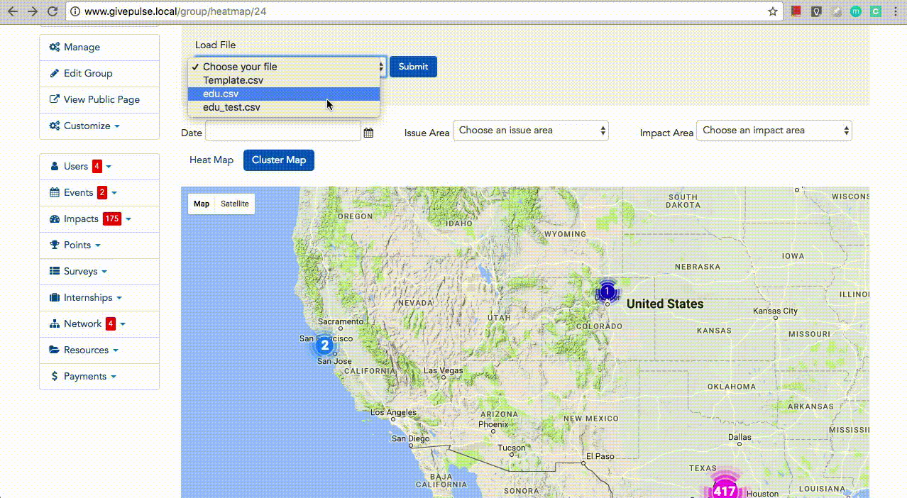

GivePulse Impact Map
A feature that helps NPO measure and visualize impact of volunteers.
This was my capstone project conducted from Jan. 2017 to May 2017. GivePulse is a civic platform that matches volunteers, professionals, and service-learning students with non-profits and organizations. As an important index to describe the difference that volunteering makes to, impact of volunteers demonstrates the change that happens as a result of an activity or project. This project aimed to design and develop a heat map/cluster map feature to help organizations or groups measure and visualize impact of volunteers. All codes were shipped to production which is now used by GivePulse users every day.
Implementation
At the beginning, I designed and an interface including heat map and cluster map in a switch mode with a date filter. And then I retrieved impact data from MySQL database and displayed it on maps in PHP and Gmap3 (a JavaScript plugin to create and manage Google Maps with jQuery).

To support of rendering data from different industries, I created a CSV template for users to fill in and upload through the website to be rendered on maps. In this way, users can visually compare the distribution of external data with that of the impact data retrieved from GivePulse. In addition, Impact Area and Issue Area filters help users understand the impact distribution better.
